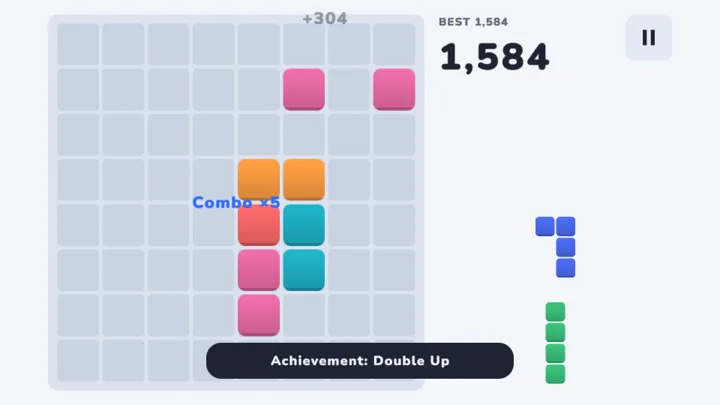

Clear a line.
The whole board shifts.
A calm block puzzle with one twist. Fill a row and every block slides one step right. Fill a column and everything slides down. Blocks pushed off the edge are gone.
Also on itch.io · Game Jolt · iPhone, Android and Steam versions coming
How it works
Drag pieces onto the 8×8 board.
Complete a row or a column and it clears.
Then the whole board shifts — right for rows, down for columns. Blocks pushed off the edge are gone.
Keep going until no piece fits. Beat your best.
Made to be calm
- No timers, no livesThink as long as you like. Nothing is rushing you.
- See every shift firstBefore you drop a piece, the board shows which lines clear and which way everything moves.
- Daily challengeThe same start for everyone, every day.
- Plays anywherePhone, tablet or computer — touch, mouse or keyboard. About 4 MB to start.
- AccessibleColorblind-friendly shapes, high contrast, reduced motion, larger text.
- No accountYour progress stays on your device. No sign-up, no trackers on this site.
Questions
What is Kerslide?
Kerslide is a free block puzzle for your browser. You place pieces on an 8×8 board, and every time you clear a line the whole board shifts: right after a row, down after a column.
Is it really free? Do I need to download or sign up?
Yes, it is free. There is nothing to download and no account to create. Open the page and play on your phone, tablet or computer. Your progress stays on your device.
What happens to blocks pushed off the edge?
They are gone. That is what makes the shift matter: a clear can open space, or wreck the line you were building. The board shows the result before you drop a piece.
Is there a timer?
No. There are no timers and no lives, so you can think as long as you like. There is also a daily challenge with the same start for everyone.
Does it work offline and on phones?
It runs in any modern browser on phone, tablet and desktop, and loads about 4 MB to start. Add it to your home screen for one-tap access.
Which languages are supported?
15: English, German, Spanish, French, Italian, Portuguese, Polish, Turkish, Indonesian, Vietnamese, Russian, Japanese, Korean, Simplified and Traditional Chinese.

15 languages: English, Deutsch, Español, Français, Italiano, Português, Polski, Türkçe, Bahasa Indonesia, Tiếng Việt, Русский, 日本語, 한국어, 简体中文, 繁體中文. The game follows your device or browser language; change it any time in Settings.